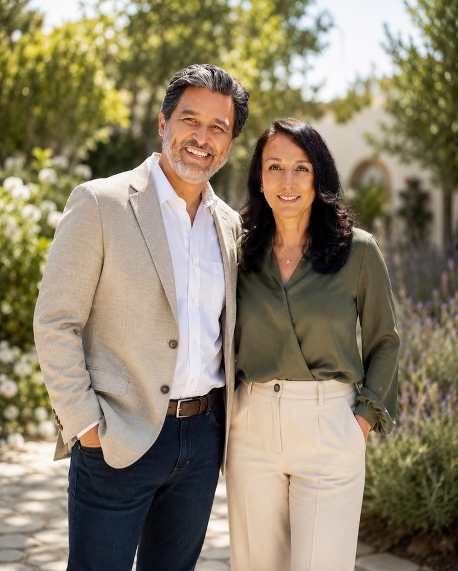
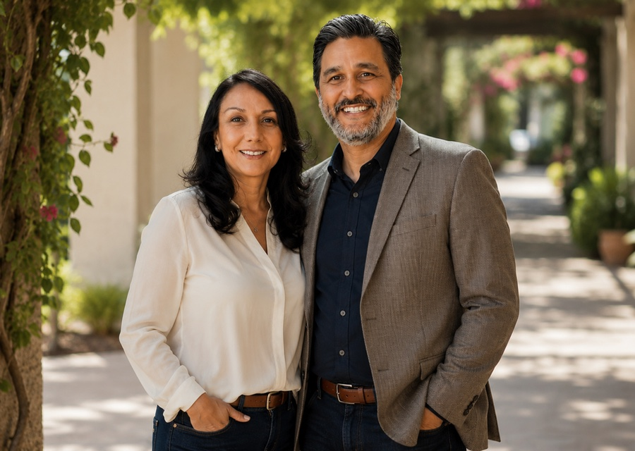
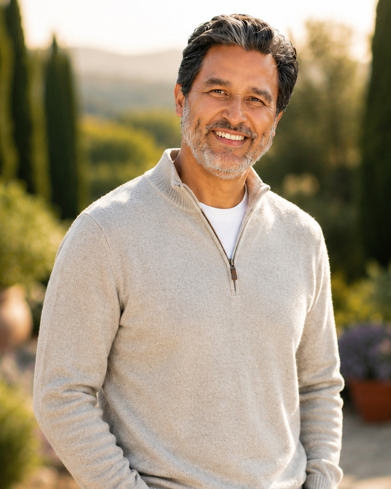

01Free
Spiritual Encounter Coaching
A personal experience in hearing God’s voice. Once you learn to hear Him, His Spirit guides you into a closer relationship — and His abundant love, peace, and joy.
Book Free SessionWe help you experience a spiritually renewed life through transformational coaching — so you can live in freedom, with purpose, and in a close relationship with God.
“Then he calls his friends and neighbors together and says, ‘Rejoice with me; I have found my lost sheep.’ I tell you that in the same way there will be more rejoicing in heaven over one sinner who repents than over ninety-nine righteous persons who do not need to repent.”
Luke 15:6–7

Leading people into a deeper relationship with Jesus by teaching God’s Word, bringing healing and transformation, and equipping every person to discover and fulfill their God-given identity and purpose.
To see every person know the truth of God’s Word, experience the freedom found in Jesus Christ, and live the abundant life God created them to live.
Begin with a free 30-minute Spiritual Encounter session — no cost, no pressure. Then go deeper whenever you’re ready.
A personal experience in hearing God’s voice. Once you learn to hear Him, His Spirit guides you into a closer relationship — and His abundant love, peace, and joy.
Book Free SessionPersonal encounters with God through the Holy Spirit that bring healing and restoration to the heart — freedom, peace, and a closer relationship with God.
Program DetailsBreaks down the barriers that block us from being who God created us to be — so you can live renewed, with freedom and greater purpose.
Program Details“I discovered my true identity in Him and gained absolute clarity about my divine calling… Thank you for being a true instrument of God’s love during this pivotal chapter of my life.”
— Amanda“Being able to have a real, two-way relationship with a loving God has made all the difference.”
— Cathy“I feel that my relationship with God has been restored… I am now on a different trajectory, the one that is in alignment with my destiny.”
— AndreaThe Shepherd and Me supports ministries that further God’s kingdom by restoring an individual’s true identity and purpose. Your heart and prayers help this ministry grow.
Give Today →Programs designed to help you heal the past, hear God clearly, and step into the abundant life you were created for.
A coaching journey that goes beyond strategy — focused on the spiritual core of your existence, helping you align with God’s voice and your true identity.
Discover who God created you to be and walk confidently in your unique calling and purpose.
Break free from the weights and wounds of your past through transformational spiritual encounters.
Equip yourself to hear God’s voice clearly, bringing peace and direction to every area of your life.
No. Our services are rooted in Christian principles and intended for personal growth, spiritual development, mentorship, and encouragement. We do not provide licensed medical care, mental health counseling, psychotherapy, legal advice, or financial services — and coaching should never replace professional advice, diagnosis, or treatment from qualified providers.
It’s a personal, unhurried conversation where you can experience what Spiritual Encounter Coaching is like, share where you are on your journey, and see whether walking together is right for you. No cost, no obligation.
Each program includes four one-hour sessions, weekly summaries with personalized assignments, two personalized video coaching messages, 24-hour email response, and a 30-minute check-in call one month after the program ends.
Package refund requests are considered within 14 days of purchase provided no sessions have been completed; sessions may be rescheduled with 24 hours’ notice. Unused sessions can be transferred to another person with written approval within 12 months. Full details are on our Refund Policy page.
Start your transformational journey today. We are here to guide you toward a deeper relationship with Jesus and a life of spiritual restoration.
Book a Free Discovery Session →We are a compassionate team of Christian coaches dedicated to walking with you through life’s trials. Guided by faith and love, we provide a safe space for spiritual growth and inner healing.
We understand what it feels like to walk through life’s most difficult seasons. Our journey has included experiences with divorce, cancer, depression, financial hardship, single parenting, grief, and loss. Through God’s faithfulness, we have discovered healing, hope, and restoration.
Today, we are passionate about walking alongside others as they navigate life’s challenges. Through biblical coaching, prayer, and encouragement, we help individuals deepen their relationship with God, experience His healing, discover lasting peace and joy, and confidently walk in the purpose He has created for them.

We offer a gentle, faith-filled path to healing. By focusing on God’s love, we support your journey to complete wellness — balance and peace across your heart, mind, and physical health.
Start With a Free Session →
“I finally understood that God doesn’t just speak to the world; He speaks directly to my heart. That clarity changed everything for me.”
I wasn’t always a Christian. In fact, even after giving my life to Christ in 2012, I spent many years struggling to understand what it truly meant to follow Jesus.
I jumped from church to church searching for answers. I had a difficult time understanding the Bible, I wasn’t sure if I was praying the “right” way, and I eventually realized something deeper — I knew about God, but I didn’t really know God or have a close relationship with Him.
Those early years were filled with frustration and discouragement. I often heard well-meaning advice like, “Just keep your eyes on Jesus,” “You just need more faith,” or “Just pray about it, brother.” While those statements were true, I didn’t know how to actually live them out.
I was searching for someone to walk alongside me.
Thankfully, God brought a few faithful Christians into my life — including the woman who would later become my wife — who allowed me to be honest about my struggles. They didn’t judge me; they helped guide me, encourage me, and shepherd me with love.
Through their discipleship, patience, and encouragement, I began to grow in wisdom, understanding, and my relationship with God.
Even as my faith grew, life was still difficult. I wrestled with questions I couldn’t answer.
I didn’t understand why my father passed away from cancer at only 57 years old. I didn’t understand why I faced my own battle with prostate cancer at 41. I didn’t understand why my previous marriage ended in a painful divorce that brought emotional and financial hardship. I didn’t understand why depression became so heavy that I almost lost my life.
I also carried guilt and shame from mistakes I had made before knowing Christ. But God was not finished with my story.
I made the decision that my past would no longer define my future. I began allowing God into the wounded places of my heart. I started releasing the guilt, pain, and disappointment I had been carrying for years. I was letting go of the old and embracing the new.
Then breakthrough came. My relationship with God became personal and real. Prayer was no longer something I was trying to figure out — it became a daily conversation with my Father. The Bible came alive as His Word began transforming my heart. I discovered that nothing — not my past, my mistakes, my struggles, or my failures — could ever separate me from the love of God.
Even though challenges still come, I now stand on this truth: “I can do all things through Christ who strengthens me.” (Philippians 4:13)
Then came “the call.” I felt God leading me to use my story, my healing, and my experiences to help others discover the same freedom and relationship with Him. In December 2019, I stepped away from my career to devote my life to serving God and helping people.
Since then, I have served in ministry supporting single parents, community outreach, marriage care, discipleship, and healing ministries. I also had the opportunity to travel to Brazil as part of a Christian healing mission.
In January 2020, my wife and I launched The Shepherd and Me, a Christian coaching and discipleship ministry created to walk alongside others as they grow closer to God. Today, my heart is simply to serve — helping others know God personally, understand His Word, heal from past wounds, discover their identity in Christ, and step into the purpose He created them for.
All for His glory.
Whether you’re looking for guidance, healing, or a deeper connection with God, we’re here to walk alongside you. Let’s explore your purpose together.
Get Started →“I surrendered my heavy burdens to Him, and in that holy moment, the Lord met me with a love that transformed my deepest struggles into a divine purpose.”
We all come to God in our own time.
Some find Him early in life and build their lives around His purpose. Others find Him through tragedy, illness, loss, or a moment when we realize we can no longer carry everything on our own.
For many of us, the journey takes time. We fall. We make mistakes. We try to control our circumstances. We allow pain, disappointment, and unforgiveness to harden our hearts. We try to do life in our own strength until we realize we were never meant to walk alone. That was my journey.
And like a loving Father, God patiently waited for me. For twenty-two years of my adult life, I was a single mother facing the challenges, fears, and responsibilities that came with raising my daughters alone. I carried guilt and shame for not giving them the family life I had dreamed of. I battled financial struggles, failed relationships, pride, unforgiveness, and the weight of trying to hold everything together.
When life became overwhelming, I buried myself in my career. Success became a place where I could escape the pain and struggles I didn’t know how to heal from.
But God saw the parts of my heart that needed healing. My turning point came when my youngest daughter was diagnosed with a congenital disorder. As a young single mother, I found myself making difficult medical decisions and facing a situation I could not fix or control. That was the moment I surrendered.
I prayed for a miracle. I cried out to God and realized how much I needed Him. By His grace, my daughter’s condition was corrected — but God didn’t just heal a situation, He began healing me.
That was the beginning of my true relationship with God. I discovered He wasn’t distant. He was a loving Father who had been walking with me all along. He comforted me through my pain, strengthened me through my struggles, and began restoring the broken places in my heart.
My walk with God wasn’t always easy. I faced suffering, fear, and challenges, but He remained faithful through every season. I didn’t have a plan for my career, a plan to buy a home, a plan to travel the world, or a plan to rebuild my life — but God did.
God opened doors I could never have opened myself. He transformed my mind, grew my faith, and taught me to see my story through His eyes.
What I once saw as failures, God turned into wisdom.
What I once saw as pain, God turned into compassion.
What I once saw as brokenness, God turned into purpose.
After more than twenty years as a single mother, God blessed me with my husband Andrew. Together, we now serve God’s calling to help others discover healing, freedom, and a deeper relationship with Jesus.
Through prayer, mentoring, and walking alongside others, my heart is to help people experience the love of the Shepherd who never gave up on me.
We created The Shepherd and Me because Jesus always goes after the one — the one who feels lost, tired, discouraged, or far away.
I know because I was that one. And He came after me.
Whether you’re looking for guidance, healing, or a deeper connection with God, we’re here to walk alongside you. Let’s explore your purpose together.
Get Started →Blessed results. Find inspiration through our coaching stories — twelve real journeys of healing, freedom, and hearing God’s voice.
“I discovered my true identity in Him and gained absolute clarity about my divine calling.”
I entered this program curious about where God was leading me during a time of great professional and personal transition. Between working full-time and being a wife and mother, I was struggling to find balance in a stressful season. My participation in the Transformational Coaching program became an opportunity to completely renew my relationship with my Heavenly Father. Andrew curated specific videos and spiritual readings that strengthened my bond with God in ways I never expected. I learned the power of being still in prayer, opening the eyes of my heart to the guiding Spirit, and the transformative practice of two-way journaling. I am now forever grateful to know the depth of my Father’s love and the specific calling He has placed on me to serve others.
“Being able to have a real, two-way relationship with a loving God has made all the difference.”
Having just completed the ‘4 Keys to Hearing God’s Voice’ course and learning and growing so much in my relationship with God because of it, I knew I didn’t want that growth to stop. Thankfully, individual coaching was available and Andrew was there to humbly, patiently, and graciously lead me closer to God. Before starting, I had a lot of “ideas” about who I thought I was (mostly negative) and who I thought God was. Andrew used his discernment and incredible gift of hearing the Holy Spirit to provide readings, videos, heartfelt feedback, and scriptures that touched my heart exactly at the right time and place to change those ideas. I’m continuing to use a lesson learned daily so my heart can be free from bitterness as I move forgiveness out of my head and into my heart (Luke 6:27–28) — I didn’t think I would ever find that peace!
“Each week the experience was clearly led by the Holy Spirit… They go ‘vertical’ prior to ‘horizontal’ in all areas of this work.”
I am so grateful for the opportunity I had to spend 4 weeks with Andrew and Maria. It was a time of spiritual awareness and awakening in my life. God spoke through both Andrew and Maria in very unique ways. Unlike most therapy/coaching sessions, they were both vulnerable about their life experiences and openly shared them with me. I am grateful for the session re-caps and related “homework.” The Word of God was paramount in their coaching, and related scripture was a part of every session. I never felt like I was “on the clock” during our meetings. I believe the suggested monetary contribution is far less than the value of this coaching. I would highly recommend this very unique and individual coaching experience to others who are seeking to grow closer to Jesus.
“I am already victorious before the battle even begins. Why? Because the Lord’s power rests upon me.”
At first, I didn’t know what I was looking for. I just knew I wanted to get closer to GOD and learn how to live a truthful, fearless, happy Christian life. I took the 4-week course and was given so much from Andrew. He helped me find myself, find GOD on a different level, and gave me tools to help with things I was dealing with through God’s word. I now know who I am and how God sees me — as His child. I learned the Lord’s power is made perfect in my weaknesses and all I have to do is have FAITH. Through the grace of GOD and the help of Andrew, I am a better man, a better husband, a better friend — and most of all I know who I am in God’s eyes. I am now fearless with a sound mind and a spiritual understanding of what I need to do as a servant of GOD.
“Andrew helped me shed many long-term barriers I had put up in my heart toward God — a new revitalized relationship filled with joy and peace.”
God has used Andrew’s ministry in my life in an incredible way. For many years I struggled to see myself in my true identity as a child of God. I had an extensive education in “Christianity” and the Bible, but my heart was held back by lies the enemy had planted deep within. Andrew has been blessed by God with a powerful gift to peel back the layers. His sensitivity to the Spirit of God allowed him to be a wonderful facilitator of the message God wanted to deliver to me. This freedom has completely changed the way I handle every aspect of my life. I am very thankful for how God has used The Shepherd and Me in my life!
“I learned simple ways of hearing God’s voice and following His direction for my future. Very specific and amazingly inspiring!”
I had an amazing experience of renewed healing in my walk with the Lord Jesus! I gained insight into areas of my life that I was still wounded from and had to release and become more vulnerable to God and His love and forgiveness. Andrew is very gifted, discerning, and sensitive to the Holy Spirit and I am truly blessed by the program!!
“I finally have the relationship with Jesus that I longed for my whole life.”
When I first began working with Andrew, I was lost — going through a divorce, caregiving for my mother, being there for my children while trying to hold it together. Andrew’s guidance and knowledge taught me to accept, see, and love myself as God did. I finally understood who I was in Christ and how much I was loved. I was able to dig deep to understand how generational curses and inner vows held me back. Because of Andrew’s coaching, I was able to study and pass my real estate exam while going through my storm. I now feel freedom to love and be loved without condemnation.
“His program really opens up your eyes and heart to God as our Father.”
I consider myself a Christian and I thought I knew God. What I realized through Andrew’s guidance and teachings is that there is so much more to God. He provided amazing material that helped me understand how God, Jesus & the Holy Spirit work together in developing my relationship with God on a deeper level. The “Pillar I — Relationship with God” program was flexible and had the right amount of material that made me hungry to learn more. If you’re a beginner Christian trying to understand the Bible or what the next step is after being baptized, I recommend this program.
“I have never been that dedicated or committed to a class in my 54 years.”
What the 4 Keys To Hearing God’s Voice course gave me was a much clearer understanding of what I am reading as far as scripture is concerned. I doubted every single thing in my life — mostly myself. Having 90 minutes a week to work with what I consider TWO instructors has given me many tools. But more importantly, it’s given me a stronger faith in my walk with the Lord. I still don’t necessarily know where I’m going, but I do know Who to ask and have a much better understanding of how to receive the answers. I’m kind of sad it’s over. God Bless.
“It opens up the possibility of having a closer walk in the Spirit with Jesus that is based on scripture and a real spiritual redemptive experience.”
Andrew has a way of sharing God’s word that gives me the confidence to draw strength from my relationship with Jesus. Rather than succumbing to feelings of guilt and wanting to give up, I begin to take action. I’m able to begin the process of renewing God’s forgiveness daily, empowering me toward a closer relationship with Him, as well as my friends and family. With Andrew’s assistance, I’m also beginning to better understand my identity in Christ, allowing me to live a more resilient life as a Christian man — especially impacting my son with God’s love as a single parent, creating a new legacy.
“Andrew was able to discern the root issues and home in on the Kingdom keys to unlock my heart.”
Coaching with Andrew has been transformational for me. I did not really know what to expect but God has done more than I could have asked or imagined. The combination of his heart for God and his sensitivity to the Spirit gave him a focus which felt deep and insightful. As a result, I feel that my relationship with God has been restored, I have grown in my true identity in Him and received emotional healing. I know that through Andrew God has put me back on track — on a different trajectory, the one that is in alignment with my destiny, and I am very grateful!
“This journaling has moved me into a deeper, more intimate relationship with Jesus.”
Coaching with Andrew was a life-changing experience for me. I was stuck in areas of my walk with the Lord, and working with Andrew for 4 weeks I recognized the barriers that were holding me back. I also learned to hear God’s voice and truly experience His abundant love and joy! Andrew is blessed with discernment and he is sensitive to the Spirit of God. He knew the precise tools and resources each week to propel me to my next step. I loved learning the two-way journal! I am thankful for the opportunity to work with Andrew!
Begin with a free 30-minute session — no cost, no pressure, just a conversation.
Book a Free Session →Your heart and prayers help this ministry grow. Join us in faith through giving and spiritual support.
The Shepherd and Me supports ministries that further God’s kingdom by restoring an individual’s true identity and purpose. God created all of us with a divine purpose to accomplish His great commission.
Every gift helps us walk alongside more people — through free encounter sessions, discipleship resources, healing ministry, and community outreach.
Prefer to give another way, or have questions? Reach us at info@shepherdandme.com or (661) 505-8159.
Demo form — connect to Wix Pay, Zeffy, or Tithe.ly in production.
Ready to experience spiritual breakthrough? Reach out to Andrew and Maria to learn how transformational coaching can help you heal, grow, and walk confidently in the life God intended for you.
Send us a message below, or reach out directly — we’d love to walk together toward your purpose.
Demo form — connect to Wix Forms or a scheduler (Wix Bookings / Calendly) in production.